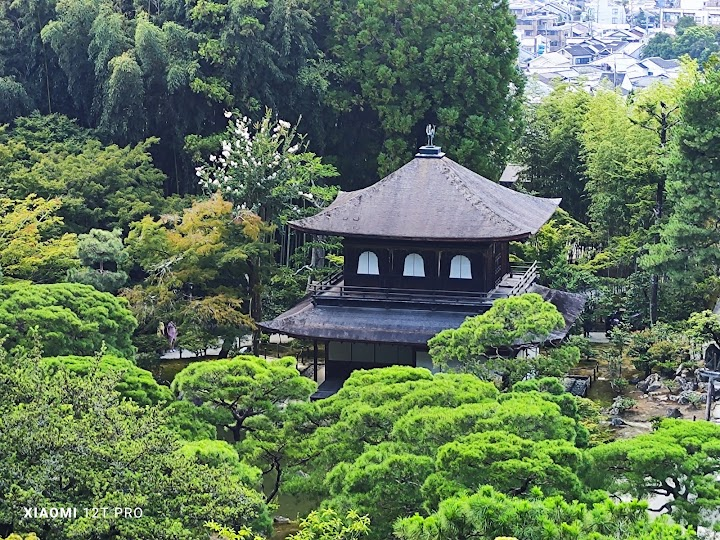
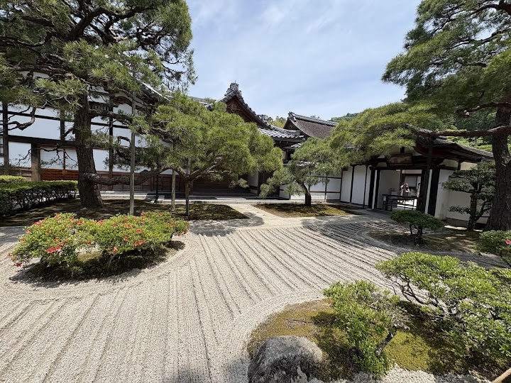
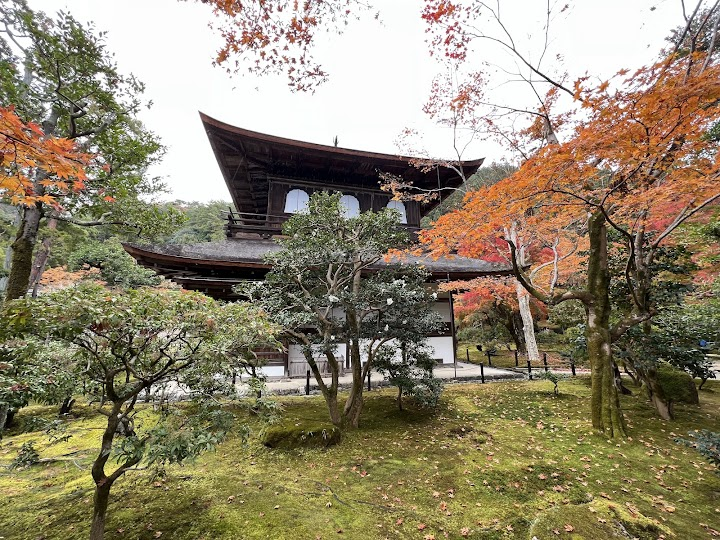
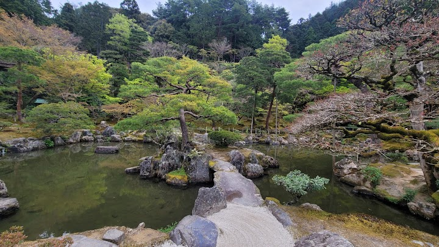
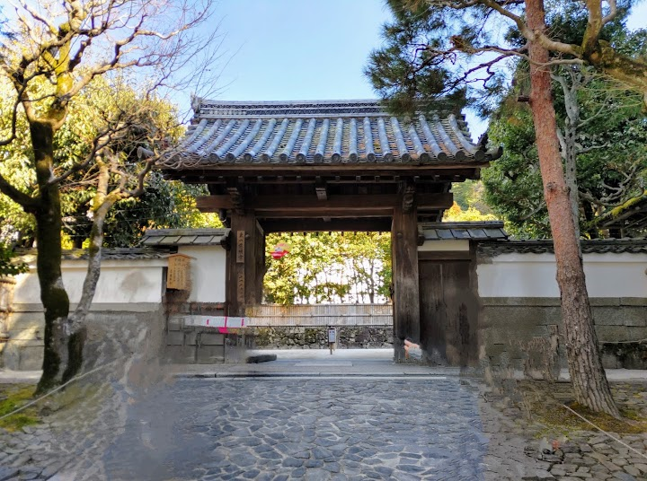

Ginkaku-ji
This 15th-century Zen temple features picturesque gardens & a sand mound shaped like Mount Fuji.
Open in Google Maps (street view, more photos and reviews there)






Visitor tips on finding it and getting there
Ginkaku-ji (the Silver Pavilion) is a wonderfully maintained temple complex and one of Kyoto's most peaceful attractions. Although it is famous for its Zen aesthetics, the beauty of the site extends far beyond the pavilion itself. From the city, there's a short uphill walk to the entrance. Along the approach, you'll find numerous souvenir shops selling local crafts, snacks, and keepsakes, making it a pleasant place to browse either before entering the temple grounds or after your visit. The highlight for me was the beautifully landscaped garden, which perfectly embodies the simplicity and el
Ginkaku-ji is an absolute masterpiece of understated elegance and zen philosophy. The atmosphere here is incredibly sophisticated, defined by a deep sense of calm, minimalism, and harmony with nature. From the moment you enter, the meticulously raked sand gardens—especially the stunning sand cone representing Mount Fuji—captivate your mind and prepare you for a peaceful journey. As you follow the winding path through the beautifully mossy, lush garden and up the hillside, you are treated to breathtaking views of the temple grounds and the city beyond. Unlike more flashy landmarks, Ginkaku-ji e
According to the official website, the admission fee is listed as 500 yen, but when I visited, I was charged 1,000 yen. It would be helpful if the pricing information were updated or clearly explained in advance to avoid confusion for visitors. That said, the garden itself is absolutely charming and well worth visiting. The scenery is beautiful, and the atmosphere feels peaceful and relaxing, making it a very enjoyable place to spend time. Another positive point is that there are several affordable parking options nearby. If you take a few minutes to search around the area, you can easily fi